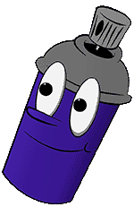
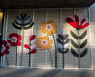

Mooier gemaakt dan dat het is.
Bloembakken
Deze bloemen staan in de Weesperstraat en zijn door gerecycled plastic gemaakt en sprong gelijk tussen andere gebouwen uit. hierdoor wordt de straat toch een beetje opgefleurt.
Over Ons
Als street-art liefhebber zocht ik naar manieren in Amsterdam hoe street-art, omdat je dit ziet als je een rondje loopt door Amsterdam, je aan het denken kan laten zetten over de natuur.